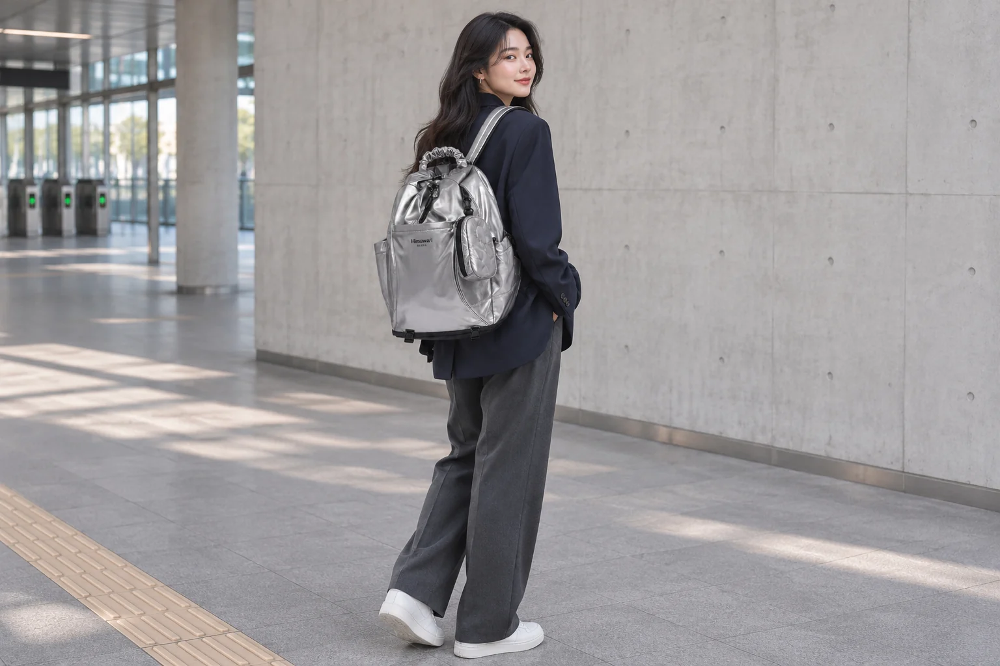
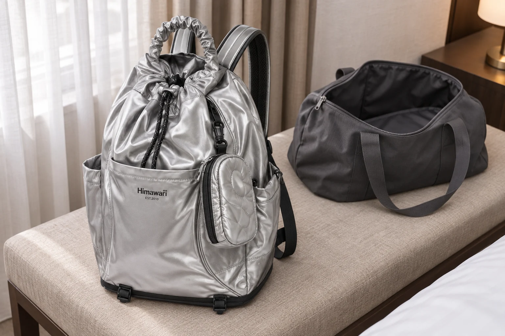
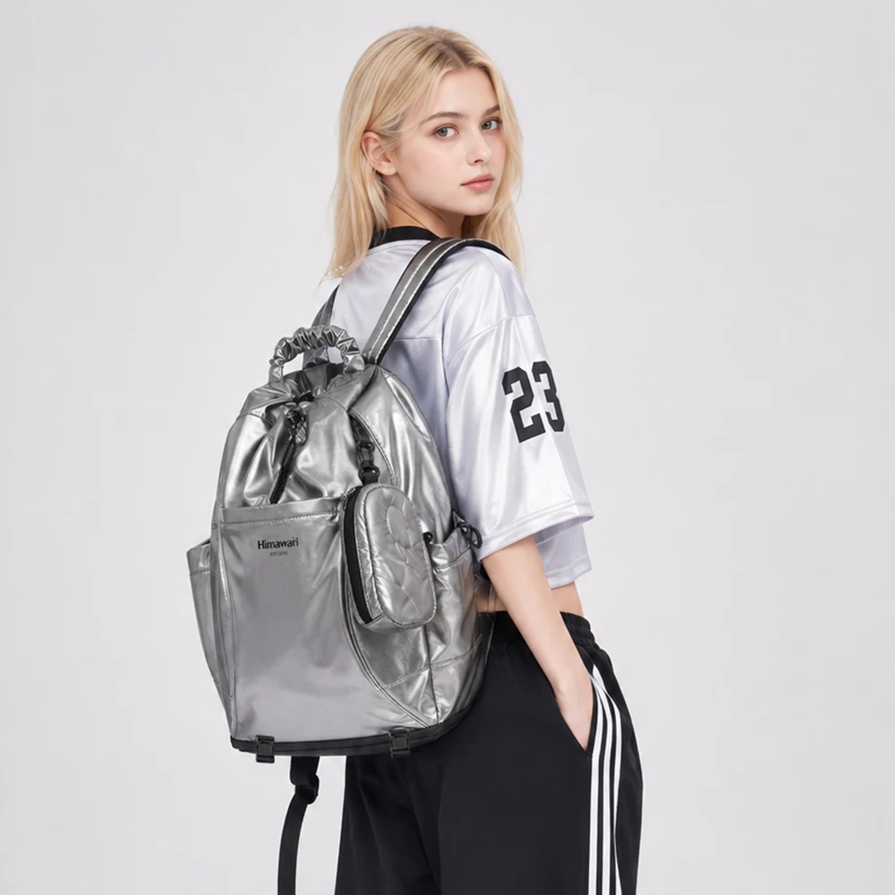

부드러운 백팩이면 접어서 보조가방으로 가져가도 될까

여행 가방 안에 백팩 하나를 더 가져가고 싶을 때가 있습니다. 도착한 뒤 큰 가방을 숙소에 두고 가볍게 외출하려는 계획입니다. 사진 속 백팩에 주름이 있고 몸판이 부드러워 보이면 작게 접어 넣을 수 있을 것 같습니다. 다만 원단이 유연해 보이는 것과 완성된 가방을 접어 보관하도록 설계한 것은 구분해서 확인해야 합니다.
No.0515 실버의 실제 상품 사진에는 입구에 모인 주름, 넓은 앞면, 둥근 부착 파우치와 검은 끈이 보입니다. 확인된 외부 크기는 가로 35 × 세로 46 × 폭 18cm이고 무게는 750g입니다. 이 정보에는 접었을 때의 크기나 접이식 보관 방법이 없습니다. 부드러운 인상만으로 접이식 백팩이라는 기능을 더하지 않고 여행에서 어떤 방식으로 가져갈지 비교해 봅니다.
다른 가방 안에 넣고 도착 뒤에만 쓰려는 경우
이 계획에는 펼친 백팩의 외부 치수보다 접은 상태의 크기와 보관 방식에 관한 정보가 필요합니다. 가방의 높이 46cm를 절반으로 나누어 접은 높이로 적을 수는 없습니다. 몸판이 접히는 자리, 바닥과 여밈 부품이 겹치는 자리, 어깨끈을 둘 위치에 따라 전체 모양이 달라지기 때문입니다. 외부 치수를 곱해서 접은 부피를 계산하는 방법도 같은 문제를 남깁니다.
제품 설명에 접이식이나 팩커블이라는 말이 있다면 어떤 동작으로 보관하는지 함께 봅니다. 자체 주머니 안으로 넣는 방식인지, 별도의 보관 파우치를 쓰는 방식인지, 접어도 되는 범위가 안내되어 있는지 확인합니다. 작은 파우치가 붙어 있다고 해서 그 파우치가 가방 전체를 담는 보관 주머니라고 해석하지 않습니다. 사용법을 확인하지 않은 채 가방을 뒤집어 밀어 넣어 볼 필요도 없습니다.
No.0515에서 보이는 둥근 부착 파우치 역시 외관으로 확인한 별도 부위입니다. 가방 전체를 담을 수 있다는 치수나 설명은 이번 자료에서 확인하지 못했습니다. 주머니의 역할을 추측하는 대신 접은 가방을 넣는 장면이나 공식 보관 안내가 있는지 질문할 수 있습니다. 답이 없다면 해당 기능은 구매 조건에서 확인되지 않은 것으로 남깁니다.

이동 중에도 등에 메고 사용할 경우
출발할 때부터 백팩에 물건을 넣어 멘다면 접은 크기가 꼭 필요한 조건은 아닐 수 있습니다. 이동 중 자주 꺼낼 물건을 백팩에 두고 큰 짐과 나누어 가져가는 계획입니다. 이때는 백팩 자체의 외부 크기와 무게, 실제로 여닫을 입구와 끈이 더 직접적인 비교 항목이 됩니다. 숙소에 도착한 뒤에는 그 가방을 비워 다음 외출에 맞추면 됩니다.
두 계획을 섞으면 선택 기준이 흐려집니다. 이동 중에는 큰 가방 안에 완전히 넣어 두고 싶으면서 후보 비교에는 멨을 때의 모양만 사용하는 경우입니다. 출발부터 도착까지 어느 가방을 실제로 들고 있을지 그려 보면 확인할 정보를 고르기 쉽습니다. 여행 중 한 번도 접을 일이 없다면 검증되지 않은 접이식 기능을 기대하면서 후보를 좁힐 이유도 줄어듭니다.
반대로 가져가는 내내 큰 짐 안에 있어야 하는 보조가방이라면 접이식 보관 안내가 분명한 제품을 비교할 이유가 있습니다. 입구를 조금 눌러 넣을 수 있다는 뜻과 제조사가 제시한 방법대로 수납할 수 있다는 뜻은 다릅니다. 항공편이나 보관함의 크기 조건이 있다면 실제로 사용할 가방의 상태를 기준으로 별도 확인해야 합니다. 부드러운 재질이라는 설명이 그 조건을 대신하지는 않습니다.

접히는 몸판 사이에도 다른 부품이 있습니다
가방을 작은 크기로 만들려 하면 원단 외의 부위가 만납니다. 지퍼 손잡이, 파우치의 연결 부품, 손잡이와 끈처럼 원래 서로 떨어져 있던 부분입니다. 겉감 한 장의 유연함을 보고 완성된 가방의 모든 부위가 같은 방식으로 접힐 것이라고 가정하지 않습니다. 부품이 겹치는 자리를 피하는 구체적인 방법은 해당 제품의 안내에서 확인합니다.
No.0515의 사양에는 겉감 나일론, 안감 폴리에스터가 기록되어 있습니다. 섬유 이름 두 개로 접을 방향이나 눌러 두어도 되는 시간을 정할 수는 없습니다. 이번 자료에서는 은색 표면의 가공 방식까지 확인하지 못했습니다. 사진에 주름이 보인다고 강하게 구겨 보거나 단단한 물건 아래 눌러 두는 시험을 구매 전 확인 방법으로 삼지 않습니다.
이미 가진 가방을 다른 짐 안에 잠깐 넣어야 한다면 우선 제품의 보관 안내를 확인합니다. 허용된 방법이 없다면 불확실한 접기 요령을 적용하기보다 가방이 자연스럽게 놓일 다른 자리를 선택하거나 판매처에 문의합니다. 넣을 때 지퍼가 닫혔다는 사실만으로 내부에서 가방과 부품이 눌리지 않는 상태까지 확인한 것은 아닙니다.
후보 목록에 남길 한 줄을 바꿔 봅니다
가져갈 백팩에 부착 파우치가 있다면 분리 가능 여부와 보관 방법도 같은 모델의 안내로 확인합니다. 사진에 연결 고리가 보인다는 이유만으로 임의로 떼어 놓는 순서를 만들지는 않습니다. 도착지에서 쓸 구성을 정할 때도 본체와 별도 부속을 빠뜨리지 않고 세는 편이 좋습니다. 접기 위한 분해가 아니라 원래 제공된 구성을 그대로 가져갈 수 있는 조건을 확인합니다.
부드러운 백팩이 필요하다는 메모를, 이동 중 큰 가방 안에 보관할 백팩이 필요하다는 문장으로 바꾸어 보세요. 그러면 판매처에 요청할 자료도 달라집니다. 펼친 외형 사진에 더해 보관 방법, 보관 상태의 치수, 별도 주머니의 포함 여부를 확인하게 됩니다. 모델명과 현재 옵션을 함께 적어 다른 크기 제품의 안내를 가져오지 않도록 합니다.
No.0515 실버는 확인한 외형과 사양 안에서 비교할 수 있습니다. 접이식 성능은 이번 글에서 검증한 기능이 아닙니다. 사진의 부드러운 주름이 마음에 드는 이유와 여행에서 가방을 작게 보관해야 하는 필요를 따로 적어 두면 취향을 유지하면서도 확인할 조건을 놓치지 않을 수 있습니다. 여행에 가져갈 방식부터 정한 뒤 그 방식이 안내된 가방을 고릅니다.